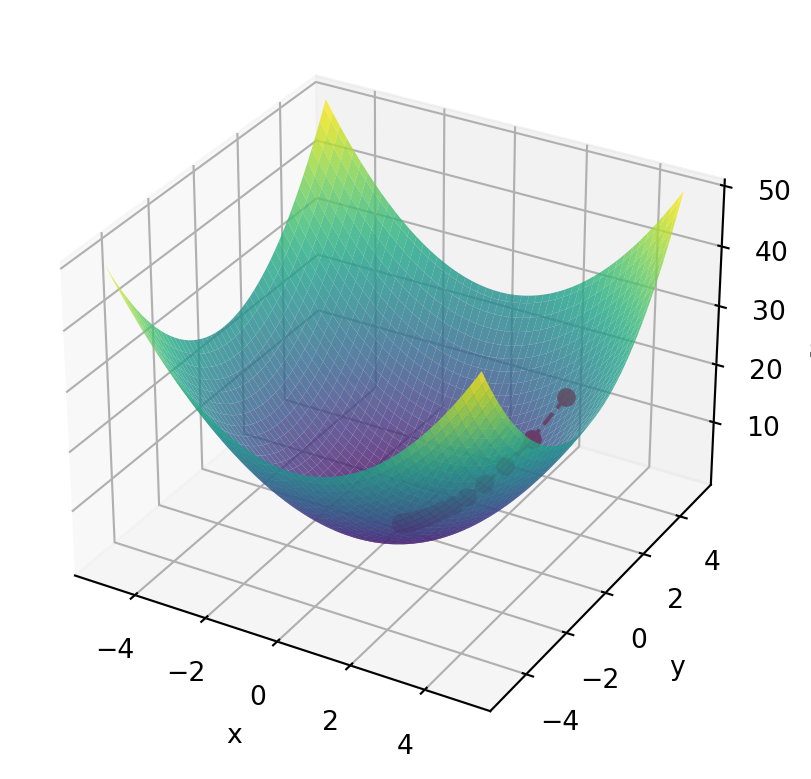

def broyden_method(F, x0, max_iterations, tolerance):
x = x0
J = np.eye(len(x0)) # Initial approximation of the Jacobian matrix
Fx = F(x)
for _ in range(max_iterations):
delta_x = np.linalg.solve(J, -Fx) # Solve the linear system J * delta_x = -F(x)
x_new = x + delta_x
Fx_new = F(x_new)
delta_F = Fx_new - Fx
if np.linalg.norm(delta_F) < tolerance:
return x_new
J += np.outer((delta_F - J @ delta_x), delta_x) / np.linalg.norm(delta_x)**2
x = x_new
Fx = Fx_new
raise ValueError("Broyden method did not converge within the specified number of iterations.")12 Newton -Raphson Para sistemas
El método de Newton raphson se puede generalizar para sistemas de ecuaciones no lineales. La idea es que en lugar de resolver una ecuación no lineal, se resuelva un sistema de ecuaciones no lineales. Para ellos suponemos que tenemos un sistema de ecuaciones no lineales de la forma:
\[ \begin{align*} f_1(x_1, x_2, \ldots, x_n) &= 0 \\ f_2(x_1, x_2, \ldots, x_n) &= 0 \\ \vdots \\ f_n(x_1, x_2, \ldots, x_n) &= 0 \\ \end{align*} \]
Note que el sistema se puede escribir de la forma \(F(x) = 0\), donde \(F(x)=[f_1,...f_n]^T\) es un vector columna con las funciones \(f_i(x_1, x_2, \ldots, x_n)\) y \(x\) es un vector columna con las variables \(x_1, x_2, \ldots, x_n\). Al aplicar la serie de Taylor a \(F(x)\) obtenemos:
\[F(x) = F(x_0) + D F(x_0)(x - x_0) + O(||x - x_0||^2)\] note que \(DF(x_0)\) es la matriz jacobiana de \(F(x)\) evaluada en \(x_0\).
\[DF(x_0) = \begin{bmatrix} \nabla f_1(x_0)^T \\ \nabla f_2(x_0)^T \\ \vdots \\ \nabla f_n(x_0)^T \\ \end{bmatrix},\]
recuerde que el vector \(\nabla f_i(x_0)\) es el gradiente de la función \(f_i(x)\) evaluada en \(x_0\). \[\nabla f_i(x_0) = \Big[\frac{\partial f_i}{\partial x_1}(x_0), \frac{\partial f_i}{\partial x_2}(x_0), \ldots, \frac{\partial f_i}{\partial x_n}(x_0)\Big]^T\]
Si \(x\) es una solución del sistema, entonces \(F(x) = 0\), de esta forma tenemos un sistema de ecuaciones lineales:
\[DF(x_0)(x - x_0) = -F(x_0)\] al resolver este sistema de ecuaciones lineales obtenemos una aproximación a la solución del sistema de ecuaciones no lineales. Usando este proceso iterativamente obtenemos el método de Newton para sistemas de ecuaciones no lineales.
12.1 Algortimo
El algoritmo para el método de Newton para sistemas de ecuaciones no lineales es el siguiente: Imput : \(F(x)\), \(x_0\), \(Tolerancia\), \(N_{max}\) Output: \(x\) o un mensaje de error
- \(k = 0\)
- Mientras \(k < N_{max}\) hacer:
- Calcular \(F(x_k)\)
- Si \(||F(x_k)|| < Tolerancia\) entonces
- Retornar \(x_k\)
- Calcular la matriz jacobiana \(DF(x_k)\)
- Preguntar si la matriz jacobiana es singular
- Si es singular entonces
- Retornar un mensaje de error
- Si es singular entonces
- Preguntar si la matriz jacobiana es singular
- Resolver el sistema de ecuaciones lineales \(D F(x_k)(x - x_k) = -F(x_k)\)
- \(x_{k+1} = x_k + x\)
- \(k = k + 1\)
- Retornar un mensaje de error
Existen otros métodos para resolver sistemas de ecuaciones no lineales, sin embargo el método de Newton es el más utilizado, aunque necesita el cálculo de la derivada. Un método alternativo para encontrar la solución de un sistema en varias variables es el método de Broyden. El método de Broyden es un método iterativo que no necesita el cálculo de la derivada. el cual se puede considerar como una evolución del método de la secante, y esta determinado por la siguiente fórmula:
- encontrar una buena aproximación de la matriz jacobiana \(D_{n-1} F(x_0)\)
- resolver el sistema de ecuaciones lineales \(D_n=D_{n-1}+\frac{\Delta F_n-D_{n-1}\Delta x_n}{||\Delta x_n||^2}\Delta x^T_n\)
- Continuar según el método de Newton
donde \(\Delta F_n=F(x_n)-F(x_{n-1})\) y \(\Delta x_n=x_n-x_{n-1}\)
12.2 Método de Gradiente descendente
El método de gradiente descendiente es un método usado para encontrar máximos y mínimos de funciones. La idea es que si tenemos una función \(f(x)\), entonces el gradiente de \(f(x)\) nos da la dirección en la que la función crece más rápido. Si queremos encontrar el mínimo de la función, entonces debemos ir en la dirección opuesta al gradiente. De esta forma el método de gradiente descendente consiste en ir en la dirección opuesta al gradiente de la función. Si la función es convexa, entonces el método de gradiente descendente converge a un mínimo global. Si la función no es convexa, entonces el método de gradiente descendente converge a un mínimo local.
Para poder adoptar este método vamos a explicar en que consiste el método de gradiente descendente. Supongamos que tenemos una función \(f(x)\), y queremos encontrar el mínimo de la función. Entonces el método de gradiente descendente consiste en iterar la siguiente fórmula:
\[x_{k+1} = x_k - \alpha \nabla f(x_k)\]
donde \(\alpha\) es un número positivo que se conoce como el tamaño de paso, machime learning se conoce como tasa de aprendizaje. Si \(\alpha\) es muy grande, entonces el método de gradiente descendente puede diverger. Si \(\alpha\) es muy pequeño, entonces el método de gradiente descendente puede converger muy lentamente. El método de gradiente descendente es un método iterativo, por lo que se puede detener en cualquier momento. Si la función es convexa, entonces el método de gradiente descendente converge a un mínimo global. Si la función no es convexa, entonces el método de gradiente descendente converge a un mínimo local.
import numpy as np
import matplotlib.pyplot as plt
from mpl_toolkits.mplot3d import Axes3D
# Define the function to optimize
def f(x, y):
return x**2 + y**2
# Define the gradient of the function
def grad_f(x, y):
return np.array([2*x, 2*y])
# Define the gradient descent algorithm
def gradient_descent(start_x, start_y, learning_rate, num_iterations):
x = start_x
y = start_y
trajectory = [(x, y)]
for _ in range(num_iterations):
gradient = grad_f(x, y)
x -= learning_rate * gradient[0]
y -= learning_rate * gradient[1]
trajectory.append((x, y))
return trajectory
# Set the initial point, learning rate, and number of iterations
start_x = 3
start_y = 3
learning_rate = 0.1
num_iterations = 20
# Run the gradient descent algorithm
trajectory = gradient_descent(start_x, start_y, learning_rate, num_iterations)
# Plot the function and the trajectory
x = np.linspace(-5, 5, 100)
y = np.linspace(-5, 5, 100)
X, Y = np.meshgrid(x, y)
Z = f(X, Y)
fig = plt.figure()
ax = fig.add_subplot(111, projection='3d')
ax.plot_surface(X, Y, Z, cmap='viridis', alpha=0.8)
ax.set_xlabel('x')
ax.set_ylabel('y')
ax.set_zlabel('f(x, y)')
trajectory = np.array(trajectory)
ax.plot(trajectory[:, 0], trajectory[:, 1], f(trajectory[:, 0], trajectory[:, 1]), 'r--', marker='o')
plt.show()
De esta forma tenemos siguiente algoritmo para el método de gradiente descendente:
12.3 Algoritmo
Imput : \(f(x)\), \(x_0\), \(\alpha\), \(N_{max}\) Output: \(x\) o un mensaje de error
- \(k = 0\)
- Mientras \(k < N_{max}\) hacer:
- Calcular \(\nabla f(x_k)\)
- \(x_{k+1} = x_k - \alpha \nabla f(x_k)\)
- \(k = k + 1\)
- Retornar \(x_k\)
12.4 Método de Newton para minimización
El método de Newton es un método iterativo para encontrar los mínimos de una función. La idea es que si tenemos una función \(f(x)\), entonces el método de Newton consiste en aproximar la función por un polinomio de segundo grado y encontrar el mínimo de este polinomio. Vamos a explicar este método para el caso de una función de una variable, y luego vamos a generalizar el método para el caso de una función de varias variables.
Sea \(f(x)\) una función doblemente diferenciable entonces podemos aproximar esta función por medio un polinomio de Taylor de segundo grado: \[f(x+t)\approx f(x)+f'(x)t+\frac{1}{2}f''(x)t^2\] Si queremos encontrar el mínimo de esta función, entonces debemos encontrar el valor de \(t\) que minimiza el polinomio. Para encontrar este valor, derivamos el polinomio con respecto a \(t\) e igualamos a cero: \[f'(x)+f''(x)t=0\] de esta forma obtenemos que el valor de \(t\) que minimiza el polinomio es: \[t=-\frac{f'(x)}{f''(x)}\] Este valor de \(t\) es el valor que minimiza el polinomio, y por lo tanto es una buena aproximación al mínimo de la función. De esta forma el método de Newton consiste en iterar la siguiente fórmula: \[x_{k+1}=x_k-\frac{f'(x_k)}{f''(x_k)}\] si la función es convexa y la segunda derivada es positiva, entonces el método de Newton converge a un mínimo global.
Podemos generalizar el método de Newton para el caso de una función de varias variables. Sea \(f(x)\in\mathcal{R}^N\to\mathcal{R}\) una función doblemente diferenciable, entonces podemos aproximar esta función por medio de un polinomio de Taylor de segundo grado:
\[f(x+t)\approx f(x)+t^T\nabla f(x)+\frac{1}{2}t^T\nabla^2 f(x)t\]
recuerde que \(\nabla f(x)\) es el gradiente de \(f(x)\) y \(\nabla^2 f(x)\) es la matriz hessiana de \(f(x)\). Si queremos encontrar el mínimo de esta función, entonces debemos encontrar el valor de \(t\) que minimiza el polinomio. Para encontrar este valor, derivamos el polinomio con respecto a \(t\) e igualamos a cero: \[\nabla f(x)+\nabla^2 f(x)t=0\] solucionando el sistema obtenemos que el valor de \(t\) \[t=-\nabla^2 f(x)^{-1}\nabla f(x)\] así el método de Newton consiste en iterar la siguiente fórmula: \[x_{k+1}=x_k-\nabla^2 f(x_k)^{-1}\nabla f(x_k)\]
12.5 Gauss-Newton Método para mínimos cuadrados no lineales
El método de Gauss-Newton es un método iterativo para resolver problemas de mínimos cuadrados no lineales. La idea es que si tenemos un sistema de \(m\) ecuaciones con \(n\) incógnitas:
\[ r_1(x_1, x_2, \ldots, x_n) = 0 \] \[ r_2(x_1, x_2, \ldots, x_n) = 0 \] \[ \vdots \] \[ r_m(x_1, x_2, \ldots, x_n) = 0. \] Podemos definir el vector residuo como: \[r(x)=[r_1,\dots,r_m]\] de esta forma podemos definir la función de la suma de los errores cuadráticos:
\[ E(x_1,...,x_n)=\frac{1}{2}(r^1+\cdots r_m^2)=\frac{1}{2}r^Tr.\] Note que \(E\in\mathcal{R}^n\to\mathcal{R}\) esta función tiene un mínimo ¿Por qué?.
Note que la serie de Taylor de \(E(x)\) es: \[E(x) = E(x_0) + \nabla E(x_0)(x - x_0) + \frac{1}{2}(x-x_0)^T\nabla^2E(x_0)(x-x_0).\] de la misma forma podemos calcular la serie de taylor de \(r(x)\):
\[r(x) = r(x_0) + Dr(x_0)(x - x_0).\]
Note que \(Dr(x_0)\) es la matriz jacobiana de \(r(x)\) evaluada en \(x_0\). Además note que \(\nabla E(x_0)=Dr(x_0)^Tr(x_0)\) y
\[\nabla^2E(x)=Dr(x)^TDr(x)+S(x),\]
donde \(S(x)=\sum_{i=1}^m r_i(x)D^2r_i(x)\). De esta forma podemos aproximar la función \(E(x)\) por medio de un polinomio de segundo grado:
\[E(x) = \frac{1}{2}r(x_0)^Tr(x_0) + (Dr(x_0)^Tr(x_0))^T(x - x_0) + \frac{1}{2}(x-x_0)^T(Dr(x_0)^TDr(x_0)+S(x))(x-x_0).\]
Aplicando el método de Newton para minimizar \(E(x)\) obtenemos la siguiente fórmula iterativa:
\[x_{k+1}=x_k-(Dr(x_k)^TDr(x_k)+S(x_k))^{-1}Dr(x_k)^Tr(x_k)\]
El cual converge localmente. Note que aui tenemos el problema de calcular \(mn^2\) derivadas, por tanto el costo computacionales realmente es alto.
Para econtar el método de Gauss-Newton, podemos pensar que omitimos el término \(S(x)\), de esta forma obtenemos
\[E(x) = \frac{1}{2}r(x_0)^Tr(x_0) + (Dr(x_0)^Tr(x_0))^T(x - x_0) + \frac{1}{2}(x-x_0)^T(Dr(x_0)^TDr(x_0))(x-x_0).\]
y al aplicar el metodo de Newton obtenemos la siguiente fórmula iterativa:
\[x_{k+1}=x_k-(Dr(x_k)^TDr(x_k))^{-1}Dr(x_k)^Tr(x_k)\]
note que esto lo podemos escribir como:
\[(Dr(x_k)^TDr(x_k))\delta=Dr(x_k)^Tr(x_k),\] con \[x_{k+1}=x_k+\delta.\]
Note que si la matriz \(Dr(x_k)^TDr(x_k)\) tiene rango completo el método de Gauss-Newton converge localmente y tiene una única solución. Ademas, si la matriz \(Dr(x_k)^TDr(x_k)\), además podríamos usar al factorización QR para resolver el sistema de ecuaciones lineales.
asi el algoritmo es
Algoritmo
Minimizar \(E(x)=\frac{1}{2}r(x)^Tr(x)\)
Sea \(x_0\) una aproximación inicial,
- A=Dr(x_k)
- Calcular \(A^TA\delta=-A^Tr(x_k)\)
- Calcular \(x_{k+1}=x_k+\delta\)
12.6 Método de Levenberg-Marquardt
EL método de Levenberg-Marquardt es una modificación del metodo de Gauss-Newton, el consiste en adicionar un parámetro para acelerar la convergencia.
Algoritmo
Minimizar \(E(x)=\frac{1}{2}r(x)^Tr(x)\)
Sea \(x_0\) una aproximación inicial, \(\lambda>0\) un parámetro de regularización,
- A=Dr(x_k)
- Calcular \(A^TA+\lambda diag(A^TA)\delta=-A^Tr(x_k)\)
- Calcular \(x_{k+1}=x_k+\delta\)
note que si \(\lambda=0\) es el mismo caso de Gauss-Newton.
Ejercicio Aplicar el método de Gauus- Newton y Levenberg-Marquardt para resolver el siguiente problema de mínimos cuadrados no lineales: \(y=c_1e^{-c_2x(t-c_3)^2}\) para los puntos \((t_i,y_i)=\{(1,3),(2,5),(2,7),(3,5),(4,1)\}\)
Rta/ \(c_1=6.301, c_2=-0.5088, c_3=2.249\)
para más detalles de esta sección ver Sun and Yuan (2006) y Sauer (2018).